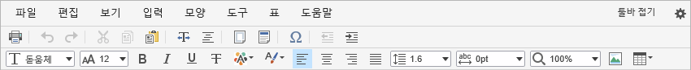
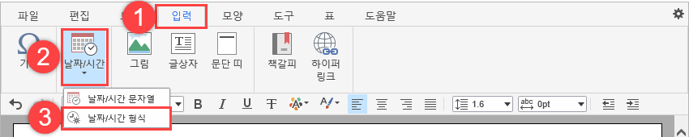
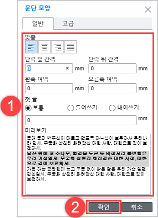
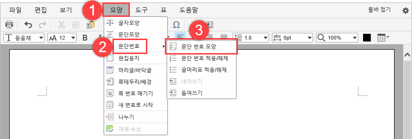
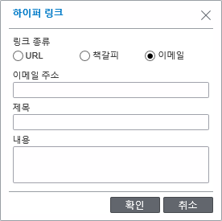

- 웹 문서 작성기는 별도의 설치 없이도 다양한 브라우저에서 문서를 작성할 수 있는 장점이 있습니다.
- 웹 문서 작성기는 문서 표현이 HWP, DOC 등과는 다를 수 있으며, 복사 및 붙여넣기 시에도 다르게 보일 수 있습니다.
- 또한 브라우저마다 고유 특성이 있기 때문에 HWP, DOC 등의 문서와 대비하여 일부 기능이 지원되지 않거나 문서의 표현이 다를 수 있습니다.
- 시스템(PC)의 성능에 따라 실행 속도가 달라질 수 있습니다.
PART I. 시작하기
1. 문서 형식에 대한 이해
2. 사용 환경
3. 웹 문서 작성기 열기
4. 화면 구성
1. 문서 형식에 대한 이해
■ HWP 형식
한글과 컴퓨터의 워드프로세서 프로그램인 한컴오피스에서 사용되는 파일 형식입니다.
HWP는 국가 표준에 등록되어 있습니다.(KS X 6101)
국가 표준이란 그 나라의 국가적 수준에서 공인된 표준화 기관에 의해 채택되어 일반에게 공개되는 표준으로 국제 표준과는 다릅니다.
국제 표준이란 세계 각국에서 생산되는 제품의 호환성을 확보하고 상호교역을 촉진시키기 위해 각종 규격/기술/용어 등에 대해 일정한 기준과 표준 형태를 국제 간 합의를 통해 규정해 놓은 것을 말합니다.
■ ODT 형식
OASIS 컨소시엄 산하 기술위원회(Organization for the Advancement of Structured Information Standard)가 제정하였으며 국제 표준화 기구 및 국제 전기 표준회의 인증을 통해 국제 표준으로 지정되었습니다.
본 규격을 이용한 모든 제품에 대해 특허권 침해 없이 자유롭게 사용이 가능합니다.
2007년 국가 표준(KS X ISO/IEC 26300)으로 채택되었습니다.
■ HWP vs. ODT
HWP형식과 ODT 형식은 서로 전혀 다른 문서 형식으로 상호 호환성을 고려해서 만들어지지 않았습니다.
HWP형식은 복잡한 문서와 미세한 편집 기능을 고려해서 만들어졌지만, ODT 형식은 상대적으로 간단한 문서와 제한된 편집 기능만을 지원합니다.
때문에 기존에 HWP 형식을 이용한 문서 편집에 익숙한 사용자들이 새롭게 ODT형식으로 문서를 작성하려면 이러한 문서 형식의 차이점으로 인해 사용 시 주의 사항이 발생합니다.
사용 시 주의 사항에 대해서는 링크를 참고해 주시기 바랍니다.
■ 웹 문서 작성기(HTML)와 문서 변환 서버
웹 문서 작성기와 문서 변환 서버를 함께 사용하는 환경에 대해 설명합니다.
웹 문서 작성기는 ActiveX의 제약 없이 다양한 환경에서 동일한 문서 편집 기능을 제공합니다.
웹 문서 작성기는 웹 환경에서의 문서 편집 기능을 제공하기 위해 HTML형식을 기반으로 한 편집 기능을 제공합니다.
웹 문서 작성기와 문서 변환 서버 제품이 함께 사용될 경우 웹 문서(HTML) 형식으로 문서를 편집하고 이 문서를 변환 과정을 통해 개방형 문서 형식인 ODT로 서버에 저장합니다.
2. 사용 환경
웹 문서 작성기의 모든 기능을 사용하기 위한 시스템의 사양에 대해 설명합니다.
■ 브라우저
웹 문서 작성기를 사용할 수 있는 브라우저는 다음과 같으며 다음 브라우저의 최신 버전이나 바로 이전 버전에서 웹 문서 작성기를 사용할 수 있습니다.
Internet Explorer 11 이상
Chrome 49 이상
■ PC 운영체제
웹 문서 작성기를 사용할 수 있는 운영체제는 다음과 같습니다.
Windows
Mac
Linux
|
NOTE
|
3. 웹 문서 작성기 열기
웹 문서 작성기에 접속할 수 있는 주소를 클릭하세요. 웹 문서 작성기의 메인 화면이 나타납니다.
웹 문서 작성기를 이용하여 다양한 형식의 문서를 생성하고 편집할 수 있습니다.
그림 2-1 웹 문서 작성기 메인 화면
4. 화면 구성
웹 문서 작성기 화면의 구성과 메뉴 스타일, 툴바 및 탭별 리본 메뉴 구성에 대해 설명합니다.
3.1 웹 문서 작성기 화면
웹 문서 작성기는 사용자들에게 익숙한 메뉴 스타일의 UI로 구성되어 사용자들이 편리하게 사용할 수 있습니다.
그림 3-1 화면 구성
|
번호 |
설명 |
|
1 |
프로그램의 탭 메뉴입니다. |
|
2 |
자주 쓰는 메뉴들로 구성된 툴바입니다. 툴바의 아이콘을 클릭하여 빠르게 작업할 수 있습니다. |
|
3 |
편집 창입니다. |
|
4 |
화면을 스크롤하면 작업 중인 문서의 현재 페이지를 표시합니다. |
|
5 |
모든 툴바 메뉴를 표시합니다. |
|
6 |
메뉴 스타일을 설정합니다. 툴바 메뉴 스타일(기본)과 리본 메뉴 스타일 중에서 선택하여 사용할 수 있습니다. |
3.2 메뉴 스타일
웹 문서 작성기에는 자주 쓰는 메뉴들로 구성된 툴바가 기본으로 나타납니다. 작업에 필요한 메뉴를 신속하게 찾을 수 있도록 디자인된 리본 메뉴 스타일을 사용할 수도 있습니다.
1. 메뉴 스타일 변경 아이콘( )을 클릭하세요.
2. 원하는 메뉴 스타일을 클릭하세요.
[툴바 메뉴 스타일]: 자주 사용하는 메뉴들로 구성된 툴바가 나타납니다. 툴바 메뉴에 대한 자세한 설명은 “3.3 툴바 메뉴”를 참고하세요.
[리본 메뉴 스타일]: 각 프로그램 탭 아래에 논리적인 그룹으로 구성된 메뉴들이 나타납니다 . 탭별 리본 메뉴에 대한 자세한 설명은 “3.4 리본 메뉴”를 참고하세요.
3.3 툴바 메뉴
툴바는 자주 사용하는 메뉴들로 구성됩니다. 툴바의 아이콘을 클릭하여 빠르게 작업할 수 있습니다.
[툴바 펼치기]를 클릭하면 모든 툴바 메뉴를 표시합니다. [툴바 접기]를 클릭하면 툴바 메뉴를 최소화하여 화면의 사용 공간을 늘릴 수 있습니다.
툴바 메뉴는 다음과 같이 구성됩니다.
그림 3-2 툴바 메뉴 – 접힌 메뉴

그림 3-3 툴바 메뉴 – 펼쳐진 메뉴
|
이름 |
설명 |
||
|---|---|---|---|
|
|
인쇄 |
문서를 인쇄합니다. |
|
|
|
되돌리기 |
최근에 수행했던 몇 가지의 작업을 되돌립니다. |
|
|
|
다시하기 |
실행을 취소한 작업을 다시 적용합니다. |
|
|
|
오려두기 |
선택한 텍스트나 개체를 잘라냅니다. |
|
|
|
복사하기 |
선택한 텍스트나 개체를 복사합니다. |
|
|
|
붙이기 |
잘라내거나 복사해 둔 텍스트나 개체를
|
|
|
|
글자모양 |
텍스트의 모양 및 크기 등을 변경합니다. |
|
|
|
문단모양 |
단락 정렬 및 단락 사이의 간격 등을 변경합니다. |
|
|
|
편집용지 |
문서의 용지 크기와 방향, 여백을 설정합니다 |
|
|
|
머리글/ |
머리글과 바닥글에 텍스트나 그래픽을
|
|
|
|
기호 |
기호를 삽입합니다. |
|
|
|
내어쓰기 |
단락과 여백의 거리를 좁힙니다. |
|
|
|
들여쓰기 |
단락이 여백의 거리를 넓힙니다. |
|
|
|
글자모양 |
텍스트의 글꼴을 변경합니다. |
|
|
|
글꼴 크기 |
텍스트의 크기를 변경합니다. |
|
|
|
굵게 |
선택한 텍스트를 굵은 글씨로 표시합니다. |
|
|
|
기울임꼴 |
선택한 텍스트를 기울임꼴로 표시합니다. |
|
|
|
밑줄 |
선택한 텍스트에 밑줄을 삽입합니다. |
|
|
|
취소선 |
선택한 텍스트에 취소선을 삽입합니다. |
|
|
|
글꼴색 |
텍스트의 색을 변경합니다. |
|
|
|
글꼴 배경색 |
텍스트의 배경색을 변경합니다. |
|
|
|
왼쪽맞춤 |
단락을 왼쪽 여백에 맞춰 정렬합니다. |
|
|
|
가운데맞춤 |
단락을 페이지의 중간에 맞춰 정렬합니다. |
|
|
|
오른쪽맞춤 |
단락을 오른쪽 여백에 맞춰 정렬합니다. |
|
|
|
양쪽맞춤 |
단락을 페이지 전체 길이에 맞춰
|
|
|
줄 간격 |
텍스트 줄 사이의 간격을 설정합니다. |
||
|
글자 간격 |
글자와 글자 사이의 간격을 설정합니다. |
||
|
화면 확대 |
페이지가 화면에 표시되는 배율을 지정합니다. |
||
|
|
그림 |
그림을 삽입합니다. |
|
|
|
표 만들기 |
표를 삽입합니다. |
|
3.4 리본 메뉴
작업에 필요한 메뉴를 신속하게 찾을 수 있도록 디자인된 리본 메뉴 스타일을 사용할 수 있습니다. 기존에 나타나는 툴바 메뉴들 중 일부 메뉴는 숨겨져 표시되지 않습니다.
탭별 리본 메뉴는 다음과 같이 구성됩니다.
■ 편집 탭

그림 3-4 편집 탭의 리본 메뉴
|
번호 |
설명 |
|---|---|
|
1 |
[클립보드] 그룹입니다. 텍스트나 개체의 복사나 삭제, 붙여넣기를 할 수 있습니다. |
|
2 |
[속성] 그룹입니다. 영문의 대소문자를 바꾸거나 숫자, 영어, 기호, 한글, 일본어를 전각 또는 반각으로 바꿀 수 있습니다. 또한 개체의 속성을 수정할 수 있습니다. |
|
3 |
[검토] 그룹입니다. 특정 단어나 구를 검색하고 바꿀 수 있으며 지정한 위치로 이동할 수 있습니다. |
■ 보기 탭
그림 3-5 보기 탭의 리본 메뉴
|
번호 |
설명 |
|---|---|
|
1 |
[페이지 표시] 그룹입니다. 페이지를 확대 및 축소하거나 특정 배율로 설정하여 볼 수 있습니다. 또한 투명선을 이용하여 페이지를 보거나 문서에 삽입된 그림을 표시할 수 있습니다. |
|
2 |
[격자 표시] 그룹입니다. 눈금선을 이용하여 페이지를 볼 수 있습니다. |
|
3 |
[쪽 윤곽] 입니다. 페이지의 여백을 제외한 내용만을 화면에 표시할 수 있습니다. |
■ 입력 탭
그림 3-6 입력 탭의 리본 메뉴
|
번호 |
설명 |
|---|---|
|
1 |
[기호] 입니다. 기호를 삽입할 수 있습니다. |
|
2 |
[날짜/시간] 입니다. 현재 날짜와 시간을 삽입할 수 있습니다. |
|
3 |
[라이브러리] 그룹입니다. 그림이나 텍스트 상자, 문단 띠를 삽입할 수 있습니다. |
|
4 |
[링크] 그룹입니다. 책갈피나 하이퍼링크를 삽입할 수 있습니다. |
■ 모양 탭
그림 3-7 모양 탭의 리본 메뉴
|
번호 |
설명 |
|---|---|
|
1 |
[서식] 그룹입니다. 텍스트나 단락의 속성을 설정할 수 있습니다. |
|
2 |
[문단 번호] 그룹입니다. 단락에 문단 번호, 글머리표를 적용하거나 해제할 수 있습니다. 단락의 내어쓰기와 들여쓰기를 설정합니다. |
|
3 |
[편집용지] 입니다. 페이지의 크기나 방향, 여백을 설정할 수 있습니다. |
|
4 |
[페이지 레이아웃] 그룹입니다. 페이지에 머리글과 바닥글 또는 번호를 삽입하거나 색 또는 테두리를 설정할 수 있습니다. |
|
5 |
[페이지 나누기] 입니다. 원하는 위치에서 페이지를 나눌 수 있습니다. |
■ 도구 탭
그림 3-8 도구 탭의 리본 메뉴
|
번호 |
설명 |
|---|---|
|
1 |
[계산] 그룹입니다. 표에서 지정한 셀에 입력된 값의 합계나 평균, 줄 수를 간단히 계산할 수 있습니다. |
■ 표 탭

그림 3-9 표 탭의 리본 메뉴
|
번호 |
설명 |
|---|---|
|
1 |
[표 스타일] 그룹입니다. 표를 생성하고 셀이나 테두리의 속성을 설정할 수 있습니다. |
|
2 |
[표 레이아웃] 그룹입니다. 셀을 나누거나 병합하고 열이나 행을 추가 또는 삭제할 수 있습니다. |
|
3 |
[계산] 그룹입니다. 표에 입력된 값의 합계나 평균, 곱셈과 같은 간단한 계산을 할 수 있습니다. |
PART II 기본 기능
1. 문서 만들기
2. 문서 정보 보기
3. 문서 인쇄하기
4. 문서 미리보기
5. 문서 보내기
1. 문서 만들기
새 문서를 열고 작성하는 등의 기본적인 사용 방법에 대해 설명합니다
1.1 새로 만들기
웹 문서 작성기의 메인 화면을 여세요. 빈 문서가 나타납니다.
그림 1 1 빈 문서
빈 문서에 원하는 내용을 작성하거나 웹 문서 작성기에 기본으로 저장된 템플릿을 선택하여 간편하게 내용을 작성할 수 있습니다.
■ 템플릿 이용하여 문서 만들기
웹 문서 작성기에 기본으로 저장된 템플릿을 이용하여 휴가 신청서나 업무 보고서 형식의 문서를 만들 수 있습니다.
1.웹 문서 작성기의 메인 화면에서 [파일 > 문서 서식]을 클릭하세요.
2.원하는 탬플릿을 클릭하세요. 선택된 템플릿이 편집 창에 나타납니다.
1.2 수정하기
툴바 메뉴를 이용하여 간단하게 문서를 수정할 수 있습니다.
■ 되돌리기 및 다시하기
툴바 메뉴에서 원하는 아이콘을 클릭하세요. 문서에 변경 사항이 적용됩니다.
되돌리기(): 최근에 수행했던 몇 가지의 작업을 되돌립니다.
다시하기(): 실행을 취소한 작업을 다시 적용합니다.
■ 텍스트 글꼴 및 크기 변경하기
1.텍스트를 드래그하여 선택한 후 툴바 메뉴에서 원하는 아이콘을 클릭하세요.
글꼴(): 텍스트의 글꼴을 변경합니다.
글꼴 크기(): 텍스트의 크기를 변경합니다.
2.텍스트의 글꼴이나 크기를 클릭하세요. 선택한 텍스트에 변경 사항이 적용됩니다.
■ 텍스트 효과 적용하기
텍스트를 드래그하여 선택한 후 툴바 메뉴에서 원하는 아이콘을 클릭하세요. 선택한 텍스트에 효과가 적용됩니다.
굵게(): 선택한 텍스트를 굵은 글씨로 표시합니다.
기울임꼴(): 선택한 텍스트를 기울임꼴로 표시합니다.
밑줄(): 선택한 텍스트에 밑줄을 삽입합니다.
취소선(): 선택한 텍스트에 취소선을 삽입합니다.
글꼴색(): 텍스트의 색을 변경합니다.
글꼴 배경색 (): 텍스트의 배경색을 변경합니다.
■ 단락 정렬 변경하기
단락을 클릭한 후 툴바 메뉴에서 원하는 아이콘을 클릭하세요. 커서가 위치한 단락의 정렬이 변경됩니다.
왼쪽 맞춤 (): 단락을 왼쪽 여백에 맞춰 정렬합니다.
가운데 맞춤 (): 단락을 페이지의 중간에 맞춰 정렬합니다.
오른쪽 맞춤 (): 단락을 오른쪽 여백에 맞춰 정렬합니다.
양쪽 맞춤
( ): 단락을 페이지 전체 길이에 맞춰 균등하게 정렬합니다. 단, 출력 결과가 HWP와는 다를 수 있습니다.
): 단락을 페이지 전체 길이에 맞춰 균등하게 정렬합니다. 단, 출력 결과가 HWP와는 다를 수 있습니다.
■ 줄 간격 설정하기
1.단락을 클릭한 후 툴바 메뉴에서 줄 간격 아이콘()을 클릭하세요.
2.원하는 줄 간격을 클릭하세요. 커서가 위치한 단락의 줄 간격이 변경됩니다.
■ 문자 간격 설정하기
1.텍스트를 드래그하여 선택한 후 툴바 메뉴에서 글자 간격 아이콘()을 클릭하세요.
2.원하는 글자 간격을 클릭하세요. 선택한 텍스트의 글자와 글자 사이의 간격이 변경됩니다.
■ 단락 내어쓰기 및 들여쓰기
단락을 클릭한 후 툴바 메뉴에서 들여쓰기 아이콘()을 클릭하세요. 커서가 위치한 단락이 오른쪽으로 이동합니다.
단락을 다시 왼쪽으로 이동하려면 내어쓰기 아이콘()을 클릭하세요.
2. 문서 정보 보기
문서의 이름과 종류 등 문서의 세부 정보를 확인할 수 있습니다.
[파일 > 문서 정보]를 클릭하세요. [문서 정보] 창이 나타납니다.
3. 문서 인쇄하기
1. 문서를 인쇄하려면 [ 파일 > 인쇄]를 클릭하거나 툴바 메뉴에서 인쇄 아이콘()을 클릭하세요. [인쇄] 창이 나타납니다.
2. 프린터를 선택하거나 페이지 범위를 설정 및 매수 등의 인쇄 옵션을 설정하세요.
A.문서를 인쇄할 때 이용할 프린터를 선택합니다.
B.인쇄할 문서의 매수를 설정합니다.
C.인쇄 범위를 설정합니다.
|
NOTE
|
3. [인쇄] 버튼을 클릭하세요. 문서의 인쇄를 시작합니다.
4. 문서 미리보기
작성 중인 문서가 웹 브라우저에서 어떻게 나타나는지 확인할 수 있습니다.
[파일 > 미리 보기]를 클릭하세요. 작성 중인 문서가 웹 브라우저의 새 창에서 열립니다.
5. 문서 보내기
작성한 문서를 다양한 방법으로 보내거나 저장할 수 있습니다.
5.1 편지 보내기(본문으로)
문서를 PC에 설정된 이메일 프로그램을 사용하여 전송할 수 있습니다.
[파일 > 보내기 > 편지 보내기(본문으로)]를 클릭하세요.
PC에 설정된 이메일 프로그램이 실행되고 작성한 문서의 텍스트가 이메일의 본문에 나타납니다.
5.2 PDF로 저장하기
문서를 PDF로 변환하여 PC에 저장할 수 있습니다. 저장된 문서는 편집할 수 없으며 내용만 확인할 수 있습니다.
1. [파일 > 보내기 > PDF로 저장하기]를 클릭하세요.
2.문서의 이름을 입력하고 [내보내기] 버튼을 클릭하세요.
IE를 사용하는 경우에는 3번 단계를 진행하고 Chrome을 사용하는 경우에는 3번 단계를 생략하세요.
3. [저장(S)] 버튼을 클릭하세요. 문서가 PDF 형식으로 변환되어 PC에 저장됩니다.
PDF파일로 변환된 문서의 저장 위치를 변경하려면 드롭다운 메뉴를 클릭한 후 [다른 이름으로 저장(A)] 옵션을 클릭하세요.
|
NOTE 사용하는 브라우저에 따라 나타나는 화면이나 절차가 다를 수 있습니다. |
PART III 고급 기능
1. 문서 구성하기
2. 페이지 설정하기
3. 문서 편집하기
1.문서 구성하기
페이지를 구분하거나 머리글, 바닥글 및 페이지 번호 등을 삽입하는 방법을 설명합니다.
1.1 페이지 나누기
문서 작성 시 필요한 위치에서 페이지를 나눌 수 있습니다.
1.문서에서 페이지 나누기를 삽입할 위치를 클릭하세요.
2. [모양] 탭의 [나누기]를 클릭하세요. 커서의 위치에서 페이지가 나뉩니다.
1.2 머리글 및 바닥글
문서의 위쪽이나 아래쪽에 페이지 번호와 기타 정보를 추가할 경우 머리글과 바닥글을 삽입합니다.
기타 정보 없이 페이지 번호만 삽입할 경우 "1.3 페이지 번호
"를 참고하세요.
1.2.1 머리글/바닥글 삽입하기
1. [모양] 탭의 [머리글/바닥글]을 클릭하세요.
2. [머리글/바닥글] 창에서 다음의 항목을 선택한 후 [확인] 버튼을 클릭하세요.
머리글 또는 바닥글 영역이 활성화됩니다.
[종류]: 머리글 또는 바닥글을 선택합니다.
[위치]: 머리글 또는 바닥글을 표시할 페이지를 선택합니다.
문서의 전체 페이지에 같은 머리글 또는 바닥글을 삽입하거나 홀수 페이지와 짝수 페이지에 각각 다른 머리글 또는 바닥글을 삽입할 수 있습니다.
[쪽 번호]: 머리글 또는 바닥글로 페이지 번호를 입력합니다.
페이지 번호의 위치와 스타일을 한 번에 설정할 수 있습니다.
3.머리글 또는 바닥글에 표시할 정보를 입력하세요.
[쪽 번호]를 선택한 경우에는 3번 단계를 생략하고
4번 단계로 건너뛰세요.
4. [머리글/바닥글 닫기] 버튼을 클릭하세요. 문서 편집 창으로 돌아갑니다.
|
NOTE
|
1.2.2 머리글/바닥글 편집하기
머리글 또는 바닥글의 글꼴이나 위치를 변경할 수 있습니다.
■ 글꼴 및 속성 변경하기
1.머리글 또는 바닥글 영역을 더블클릭하세요. 머리글 또는 바닥글 영역이 활성화됩니다.
2.머리글 또는 바닥글을 드래그하여 선택한 후 툴바 메뉴를 이용하여 글꼴이나 크기, 글꼴 속성을 수정하세요.
3. [머리글/바닥글 닫기] 버튼을 클릭하세요. 문서 편집 창으로 돌아갑니다.
■ 위치 수정하기
1. [모양] 탭의 [편집용지]를 클릭하세요. [편집 용지] 창이 나타납니다.
2. [용지 여백] 영역에서 머리글과 바닥글의 위치를 조정한 후 [확인] 버튼을 클릭하세요.
1.2.3 머리글/바닥글 삭제하기
삽입된 머리글 또는 바닥글을 삭제하는 방법은 다음과 같습니다.
1.머리글이나 바닥글 영역을 더블 클릭하세요. 머리글 또는 바닥글 영역이 활성화됩니다.
2.삭제하려는 머리글 또는 바닥글을 드래그하여 선택하세요.
3.키보드의 <Backspace> 또는 <Delete> 키를 누르세요 . 머리글 또는 바닥글이 삭제됩니다.
|
NOTE
|
1.3 페이지 번호
문서의 위쪽이나 아래쪽 여백에 페이지 번호를 삽입할 수 있습니다.
1.3.1 페이지 번호 삽입하기
1. [모양] 탭의 [쪽 번호 매기기]를 클릭하세요.
2. [쪽 번호 매기기] 창에서 다음의 항목을 선택한 후 [확인] 버튼을 클릭하세요. 자동으로 페이지 번호가 지정되어 적용됩니다.
[위치] : 페이지 번호를 표시할 위치를 선택합니다.
[쪽 번호 없음] : 삽입된 페이지 번호를 삭제합니다.
[모양] : 페이지 번호의 스타일을 선택합니다.
1.3.2 페이지 번호 편집하기
페이지 번호의 글꼴이나 위치를 변경할 수 있습니다.
■ 글꼴 및 속성 변경하기
1.머리글이나 바닥글 영역을 더블 클릭하세요. 머리글 또는 바닥글 영역이 활성화됩니다.
2.페이지 번호를 드래그하여 선택한 후 툴바 메뉴를 이용하여 글꼴이나 크기, 글꼴 속성을 수정하세요.
3. [머리글/바닥글 닫기] 버튼을 클릭하세요. 문서 편집 창으로 돌아갑니다.
■ 위치 수정하기
1. [모양] 탭의 [편집용지]를 클릭하세요. [편집 용지] 창이 나타납니다.
2. [용지 여백] 영역에서 페이지 번호의 위치를 조정한 후 [확인] 버튼을 클릭하세요.
1.3.3 페이지 번호 삭제하기
1. [모양] 탭의 [쪽 번호 매기기]를 클릭하세요. [쪽 번호 매기기] 창이 나타납니다.
2. [쪽 번호 없음] 항목을 선택한 후 [확인] 버튼을 클릭하세요 . 페이지 번호가 삭제됩니다.
1.4 날짜 및 시간
문서의 본문이나 머리글 및 바닥글에 날짜 및 시간을 삽입할 수 있습니다.
1.문서에서 날짜 또는 시간을 삽입할 위치를 클릭하세요.
2. [입력] 탭의 [날짜/시간 > 날짜/시간 형식]을 클릭하세요.

3.원하는 날짜 및 시간 형식을 선택한 후 [확인] 버튼을 클릭하세요.
4. [입력] 탭의 [날짜/시간 > 날짜/시간 문자열]을 클릭하세요. 현재의 날짜와 시간이 선택한 형식으로 나타납니다.
2. 페이지 설정하기
페이지 가장자리의 빈 공간인 페이지 여백에 따라 문서의 모양과 가독성이 달라집니다. 머리글이나 바닥글, 페이지 번호를 페이지의 여백에 삽입할 수 있습니다.
1. [모양] 탭의 [편집용지]를 클릭하세요.
2. [편집 용지] 창에서 다음의 항목을 설정한 후 [확인] 버튼을 클릭하세요.
[용지 종류]: 지정된 크기의 용지를 선택하거나 [사용자 지정 크기] 옵션을 선택하여 용지의 너비와 높이를 직접 설정합니다.
[용지 방향]: 용지 방향을 선택합니다.
[용지 여백]
- [위쪽/아래쪽/왼쪽/오른쪽] : 페이지의 여백을 조정하여 문서 편집 영역의 크기를 설정합니다.
- [머리글/바닥글] : 머리글과 바닥글 또는 페이지 번호를 삽입하는 영역의 크기를 설정합니다.
3. 문서 편집하기
웹 문서 작성기의 다양한 기능을 이용하여 문서를 편집하는 방법에 대해 설명합니다.
3.1 글꼴 수정하기
문서에 입력된 텍스트의 글꼴과 크기, 속성 등을 변경하여 다양한 효과를 줄 수 있습니다.
■ 툴바 메뉴에서 변경
수정할 텍스트를 드래그하여 선택한 후 툴바 메뉴에서 원하는 아이콘을 클릭하세요.
그림 3‑1 툴바 메뉴 스타일 – 툴바 메뉴
그림 3‑2 리본 메뉴 스타일 – 툴바 메뉴
|
이름 |
설명 |
|
|
글자모양 |
텍스트의 글꼴을 변경합니다. |
|
|
글꼴 크기 |
텍스트의 크기를 변경합니다. |
|
|
굵게 |
선택한 텍스트를 굵은 글씨로 표시합니다. |
|
|
기울임꼴 |
선택한 텍스트를 기울임꼴로 표시합니다. |
|
|
밑줄 |
선택한 텍스트에 밑줄을 삽입합니다. |
|
|
취소선 |
선택한 텍스트에 취소선을 삽입합니다. |
|
|
글꼴색 |
텍스트의 색을 변경합니다. |
|
|
글꼴 배경색 |
텍스트의 배경색을 변경합니다. |
|
■ 글꼴 창에서 변경
1. 수정할 텍스트를 드래그하여 선택한 후 [모양] 탭의 [글자모양]을 클릭하세요.
2. [글자모양] 창에서 다음의 항목을 설정한 후 [확인] 버튼을 클릭하세요. 선택한 텍스트에 변경 사항 및 효과가 적용됩니다.
[글꼴] : 텍스트의 글꼴을 지정합니다.
[글꼴 크기] : 텍스트의 크기를 변경합니다.
[속성] : 텍스트에 굵은 글씨, 기울임꼴, 취소선, 밑줄, 아래/위 첨자 등의 효과를 줍니다.
[글꼴색] : 텍스트의 색을 변경합니다.
[글꼴 배경색] : 텍스트의 배경색을 변경합니다.
[미리보기] : 글꼴의 설정 값을 미리 볼 수 있습니다.
[테두리 두께] : 텍스트에 추가할 테두리의 두께를 설정합니다.
[테두리종류] : 텍스트에 추가할 테두리의 종류를 선택합니다.
[테두리 색] : 텍스트에 추가할 테두리의 색을 선택합니다.
[테두리선택] : 텍스트에 추가할 테두리의 위치를 선택합니다.
■ 대/소문자 변경
영문 텍스트를 드래그하여 선택한 후 [편집] 탭의 [대/소문자 바꾸기]를 클릭하세요. 선택한 텍스트의 대소문자가 바뀝니다.
■ 전각/반각 변경
텍스트를 드래그하여 선택한 후 [편집] 탭의 [전각/반각 바꾸기]를 클릭하세요. 국문과 영문, 일문, 숫자, 기호가 전각 또는 반각으로 바뀝니다.
3.2 단락 조정하기
문서에서 줄이 바뀌어 나눠진 단위를 단락 또는 문단이라고 합니다. 글을 입력하는 도중 문단을 나누려면 키보드의 <Enter> 키를 누릅니다.
단락의 정렬, 단락 사이의 간격 및 줄 간격을 변경하는 방법은 다음과 같습니다.
3.2.1 툴바 메뉴에서 변경
단락이나 텍스트를 클릭하거나 드래그하여 선택한 후 툴바 메뉴에서 원하는 아이콘을 클릭하세요.
문서 전체의 단락을 조정하려면 [편집] 탭의 [모두 선택]을 클릭하거나 키보드의 단축키 <Ctrl + A>를 눌러 전체 텍스트를 선택하세요.
그림 3‑3 툴바 메뉴 스타일 – 툴바 메뉴
그림 3‑4 리본 메뉴 스타일 – 툴바 메뉴
|
이름 |
설명 |
|
|
|
왼쪽맞춤 |
단락을 왼쪽 여백에 맞춰 정렬합니다. |
|
|
가운데맞춤 |
단락을 페이지의 중간에 맞춰 정렬합니다. |
|
|
오른쪽맞춤 |
단락을 오른쪽 여백에 맞춰 정렬합니다. |
|
|
양쪽맞춤 |
단락을 페이지 전체 길이에 맞춰 균등하게 정렬합니다. |
|
|
줄 간격 |
텍스트 줄 사이의 간격을 설정합니다. |
|
|
글자 간격 |
글자와 글자 사이의 간격을 설정합니다. |
|
|
내어쓰기 |
단락과 여백의 거리를 좁힙니다. |
|
|
들여쓰기 |
단락이 여백의 거리를 넓힙니다. |
■ 단락 정렬하기
단락을 왼쪽, 가운데, 오른쪽, 양쪽 여백에 맞추어 정렬할 수 있습니다.
변경할 단락을 클릭한 후 툴바 메뉴에서 정렬 아이콘 (
,
,
,
)을 클릭하세요. 선택한 단락의 정렬이 변경됩니다.
■ 줄 간격 설정하기
줄 간격을 설정할 수 있습니다.
단락을 클릭한 후 툴바 메뉴에서 줄 간격 아이콘()을 클릭하세요.
원하는 줄 간격을 클릭하세요. 커서가 위치한 단락의 줄 간격이 변경됩니다.
■ 문자 간격 설정하기
글자 사이의 간격이 균일하게 보이도록 글자와 글자 사이의 간격을 설정할 수 있습니다.
텍스트를 드래그하여 선택한 후 툴바 메뉴에서 글자 간격 아이콘()을 클릭하세요.
원하는 문자 간격을 클릭하세요. 선택한 텍스트의 글자와 글자 사이의 간격이 변경됩니다.
■ 단락 내어쓰기 및 들여쓰기
단락의 들여쓰기를 설정하면 다른 단락과의 정렬을 쉽게 맞출 수 있습니다.
단락을 클릭한 후 툴바 메뉴에서 들여쓰기 아이콘()을 클릭하세요. 커서가 위치한 단락이 오른쪽으로 이동합니다.
단락을 다시 왼쪽으로 이동하려면 내어쓰기 아이콘()을 클릭하세요.
3.2.2 [문단 모양] 창에서 변경
1.변경할 단락이나 텍스트를 클릭하거나 드래그하여 선택한 후 [모양] 탭의 [문단모양]을 클릭하세요.
문서 전체의 단락을 조정하려면 [편집] 탭의 [모두 선택]을 클릭하거나 키보드의 단축키
<Ctrl + A>를 눌러 전체 텍스트를 선택하세요.
2. [문단 모양] 창에서 다음의 항목을 설정한 후 [확인] 버튼을 클릭하세요. 선택한 단락이나 텍스트에 변경 사항이 적용됩니다.

[맞춤] : 단락을 왼쪽, 가운데, 오른쪽, 양쪽 여백에 맞추어 정렬합니다.
[단락 앞 /뒤 간격] : 단락 앞뒤에 추가할 공백을 설정합니다.
[왼쪽/오른쪽 여백] : 단락을 오른쪽이나 왼쪽으로 이동합니다.
[첫 줄] : 단락 첫 줄이 시작할 위치를 설정합니다.
- [보통]: 단락 모든 줄의 시작 위치가 동일합니다.
- [들여쓰기/내어쓰기] : 해당 항목을 선택 후 설정값을 입력하면 단락 첫 줄의 시작 위치가 설정한 값만큼 오른쪽이나 왼쪽으로 이동합니다.
[미리보기] : 단락의 설정 값을 미리볼 수 있습니다.
[세로 정렬] : 테두리 내 단락의 세로 정렬을 선택합니다.
[테두리 두께] : 단락에 추가할 테두리의 두께를 설정합니다.
[테두리 종류] : 단락에 추가할 테두리의 종류를 선택합니다.
[배경색] : 단락의 배경색을 선택합니다.
[테두리 색] : 단락에 추가할 테두리의 색을 선택합니다.
[테두리 선택] : 단락에 추가할 테두리의 위치를 선택합니다.
3.3 글머리 기호 생성 및 번호 매기기
여러 개의 항목이 나열된 목록이나 개요 수준의 단계가 적용된 목록을 만듭니다. 일반적으로 여러 개의 항목을 나열할 때는 글머리 기호(Bullet)를 사용하고, 연속된 동작이나 순서 및 다단계 목록을 작성할 때는 번호를 매겨 나열합니다.
글머리 기호나 번호를 추가 또는 삭제하는 방법은 다음과 같습니다.
■ 글머리 기호 및 번호 추가하기
1.글머리 기호를 추가할 문장을 클릭하세요.
2. [모양] 탭의 [문단 번호 > 문단 번호 모양]을 클릭하세요.

|
NOTE [문단 번호] 메뉴는 툴바 메뉴 스타일에서만 지원되므로 해당 메뉴를 사용하려면 “3.2메뉴 스타일”을 참고하여 메뉴 스타일을 [툴바 메뉴 스타일]로 설정해 주세요. |
3. [문단 번호/글머리표] 창에서 원하는 글머리 기호나 번호 유형을 선택한 후 [확인] 버튼을 클릭하세요. 문장에 선택한 글머리 기호나 번호가 추가되고 [문단 번호/글머리표 적용/해제] 메뉴에 체크 표시가 나타납니다.

■ 글머리 기호 및 번호 삭제하기
1.글머리 기호나 번호를 삭제할 문장을 클릭하세요.
2. [모양] 탭의 [문단 번호 > 문단 번호 적용/해제] 또는 [글머리표 적용/해제]를 클릭하세요. 문장에 추가된 글머리 기호나 번호가 사라집니다.
3.4 클립보드
문서나 다른 프로그램에서 잘라내거나 복사한 텍스트나 그래픽을 컴퓨터에 일시적으로 저장한 후 다른 위치에 붙여 넣을 수 있습니다. 데이터가 일시적으로 저장되는 곳이 클립보드입니다.
[편집] 탭에서 클립보드를 이용하여 오려두기, 복사하기, 붙이기, 지우기 및 모두 선택 기능을 사용할 수 있습니다.
■ 잘라내기
잘라낼 텍스트나 개체를 드래그하여 선택한 후 [편집] 탭의 [오려두기]를 클릭하세요.
■ 복사
복사할 텍스트나 개체를 드래그하여 선택한 후 [편집] 탭의 [복사하기]를 클릭하세요.
■ 붙여 넣기
1.잘라내거나 복사한 텍스트 또는 개체를 붙여 넣을 위치를 클릭한 후 [편집] 탭의 [붙이기]를 클릭하세요.
2.원하는 붙여 넣기 메뉴를 클릭하세요.
[붙이기] : 원래의 색깔과 글자 모양 등 원본에 있는 서식을 그대로 유지하여 클립보드의 내용을 붙여 넣습니다.
[텍스트로 붙이기] : 클립보드의 내용 중 텍스트만 붙여 넣습니다. 그림, 표 등을 복사해도 텍스트만 삽입되며, 붙여넣은 문단에 지정된 서식을 따릅니다.
[MS Word 형식에서 붙이기] : 클립보드의 내용을 MS Word 형식대로 붙여 넣습니다.
■ 지우기
지울 텍스트나 개체를 드래그하여 선택한 후 [편집] 탭의 [지우기]를 클릭하세요.
■ 모두 선택
텍스트나 개체, 단락을 클릭한 후 [편집] 탭의 [모두 선택]을 클릭하세요. 문서의 전체 내용이 선택됩니다.
|
NOTE 키보드의 단축키 <Ctrl + A>를 눌러 문서의 전체 내용을 선택할 수도 있습니다. |
3.5 찾기 및 바꾸기
문서 내의 특정 단어나 구를 검색하거나 단어나 구를 검색하여 다른 단어나 구로 바꿀 수 있습니다.
■ 찾기
1. [편집] 탭의 [찾기]를 클릭하세요.
2. [찾기/바꾸기] 창에서 찾을 내용을 입력하세요.
필요에 따라 검색 옵션이나 방향을 설정하세요.
|
NOTE 한 단어 이상 검색할 때, 띄어쓰기가 다른 경우 검색이 되지 않습니다. |
3. [찾기] 버튼을 클릭하세요. 버튼을 클릭할 때마다 페이지가 이동하며 검색된 내용을 표시합니다.
■ 바꾸기
1. [편집] 탭의 [바꾸기]를 클릭하세요.
2. [찾기/바꾸기] 창에서 찾을 내용과 바꿀 내용을 입력하세요.
필요에 따라 검색 옵션이나 방향을 설정하세요.
3.다음의 버튼을 이용하여 내용을 찾아 바꾸세요.
[바꾸기]: 입력한 내용을 검색하여 하나씩 바꿉니다.
[모두 바꾸기]: 입력한 내용을 검색하여 일괄적으로 바꿉니다.
3.6 이동
문서 내의 특정 페이지나 책갈피로 이동할 수 있습니다.
1. [편집] 탭의 [이동]을 클릭하세요.
2. [이동] 창에서 이동할 항목을 클릭한 후 세부 사항을 설정하세요.
[책갈피]: 드롭다운 버튼을 클릭하여 원하는 책갈피를 선택하세요.
|
NOTE 문서에 삽입된 책갈피가 있어야 해당 기능을 사용할 수 있습니다. 책갈피를 만드는 방법에 대한 자세한 내용은 “3.10 책갈피”를 참고하세요. |
[쪽]: 이동하려는 페이지의 번호를 입력하세요.
3. [확인] 버튼을 클릭하세요. 커서가 해당 위치로 이동합니다.
3.7 기호
기호 대화 상자를 이용하여 키보드에 없는 기호, 특수문자, 유니코드 문자를 삽입할 수 있습니다.
1.기호를 삽입할 위치를 클릭하세요.
2. [입력] 탭의 [기호]를 클릭하세요.
3. [기호] 창에서 원하는 기호를 선택한 후 [확인] 버튼을 클릭하세요. 선택한 위치에 기호가 삽입됩니다.
3.8 그림
그림을 삽입하고 편집하는 방법에 대해 설명합니다.
■ 그림 삽입하기
PC에 저장되어 있는 이미지를 삽입할 수 있습니다.
1.이미지를 삽입할 위치를 클릭하세요.
2. [입력] 탭의 [그림]을 클릭하세요.
3. [이미지] 창에서 [이미지 추가] 버튼을 클릭한 후 원하는 이미지를 선택하세요.
필요에 따라 이미지의 크기 등의 속성을 설정하세요.
4. [확인] 버튼을 클릭하세요. 이미지가 선택한 위치에 삽입됩니다.
삽입된 이미지의 크기를 조정하려면 이미지를 클릭한 후 가장자리나 모서리를 마우스로 드래그하세요.
삽입된 이미지를 정렬하려면 이미지를 클릭한 후 툴바 메뉴에서 정렬 아이콘(,
,
,
)을 클릭하세요.
■ 그림 편집하기
1.편집할 이미지를 더블 클릭하거나 우클릭한 후 [이미지 수정] 메뉴를 클릭하세요. 또는 이미지를 클릭한 후 [편집] 탭의 [고치기]를 클릭하세요.
2. [이미지] 창에서 다음의 속성을 설정한 후 [확인] 버튼을 클릭하세요.
[이미지 경로] : 선택한 이미지가 저장된 PC의 위치가 나타납니다. [이미지 추가] 버튼을 클릭하여 다른 이미지로 바꿀 수 있습니다.
[너비/높이 ]: 선택한 이미지의 가로와 세로 크기를 설정합니다. 이미지의 가로 크기는 1~512px 사이의 값으로 입력하세요.
[비율 유지] : 이미지의 가로와 세로 비율을 유지하여 크기를 조정합니다. 이 기능을 사용할 경우 가로 또는 세로 값 하나만 입력하면 나머지 값이 자동으로 계산되어 입력됩니다.
[원래 크기로] : 선택한 이미지를 원래 크기로 되돌립니다.
■ 그림 삭제하기
삭제할 이미지를 우클릭한 후 [지우기] 메뉴를 클릭하세요. 또는 삭제할 이미지를 클릭한 후 키보드의 <Backspace> 또는 <Delete> 키를 누르세요.
3.9 텍스트 상자
텍스트 상자는 본문 중간에 흐름과 다른 내용의 글을 넣을 때 사용합니다.
■ 텍스트 상자 삽입하기
1.텍스트 상자를 삽입할 위치를 클릭하세요.
2. [입력] 탭의 [글상자]를 클릭하세요.
3. [글상자] 창에서 다음의 속성을 설정한 후 [확인] 버튼을 클릭하세요.
[너비/높이] : 텍스트 상자의 가로와 세로 크기를 설정합니다.
[본문과 배치] : 본문 텍스트와의 정렬을 설정합니다.
[테두리 속성] : 텍스트 상자의 테두리 두께와 종류, 색을 설정합니다.
[배경색] : 텍스트 상자의 배경색을 설정합니다.
4.텍스트 상자를 더블 클릭한 후 원하는 내용을 입력하세요.
■ 텍스트 상자 편집하기
텍스트 상자의 크기나 위치를 간단히 조정하려면 텍스트 상자를 클릭한 후 가장자리나 모서리를 마우스로 드래그하세요
텍스트 상자의 크기, 정렬, 테두리, 배경색을 변경하려면 텍스트 상자를 우클릭한 후 [개체 속성] 메뉴를 클릭하세요.
텍스트 상자를 삭제하려면 텍스트 상자를 우클릭한 후 [지우기] 메뉴를 클릭하세요. 또는 삭제할 텍스트 상자를 클릭한 후 키보드의 <Backspace> 또는 <Delete> 키를 누르세요.
3.10 책갈피
문서에 책갈피를 삽입하여 책의 책갈피처럼 쉽게 찾고자 하는 위치를 표시합니다. 고유 이름을 지정할 수 있어 구분하기 쉽습니다.
■ 책갈피 만들기
1.문서에서 책갈피를 삽입할 텍스트, 그림 또는 위치를 클릭하세요.
2. [입력] 탭의 [책갈피]를 클릭하세요.
3. [책갈피] 창에 책갈피 이름을 입력한 후 [확인] 버튼을 클릭하세요. 지정한 위치에 책갈피 아이콘()이 나타납니다.
책갈피 이름을 수정하려면 책갈피 아이콘()을 우클릭한 후 [책갈피 수정] 메뉴를 클릭하세요. [책갈피] 창이 나타나 간단히 책갈피 이름을 수정할 수 있습니다.
■ 책갈피로 이동하기
1. [편집] 탭의 [이동]을 클릭하세요.
2. [이동] 창에서 [책갈피] 항목을 선택한 후 드롭다운 버튼을 클릭하여 원하는 책갈피를 선택하세요.
3. [확인] 버튼을 클릭하세요. 선택된 책갈피의 위치로 이동합니다.
■ 책갈피 삭제하기
삭제할 책갈피 아이콘()을 우클릭한 후 [책갈피 삭제] 메뉴를 클릭하세요. 또는 삭제할 책갈피 아이콘()을 클릭한 후 키보드의 <Backspace> 또는 <Delete> 키를 누르세요. 선택된 책갈피가 삭제됩니다.
3.11 하이퍼링크
텍스트 또는 개체에 링크를 걸어 웹 페이지로 이동하거나, 문서 내에서 특정 위치를 지정하여 커서를 옮기거나, 이메일을 보내는 기능입니다.
■ 하이퍼링크 삽입하기
1.하이퍼링크를 표시할 텍스트를 드래그하여 선택하거나 개체를 클릭하세요.
2. [입력] 탭에서 [하이퍼링크]를 클릭하세요.
3. [하이퍼링크] 창에서 삽입할 링크의 종류를 클릭한 후 세부 사항을 설정하세요.
[URL] : 웹 페이지로 이동할 수 있도록 웹 페이지 하이퍼링크를 삽입합니다.
[책갈피] : 현재 문서의 특정 위치로 이동할 수 있도록 하이퍼링크를 삽입합니다.
[이메일] : 이메일을 보낼 수 있는 하이퍼링크를 삽입합니다.

4. [확인] 버튼을 클릭하세요. 링크가 본문에 적용되고 하이퍼링크가 삽입된 텍스트나 개체는 다른 색으로 표시됩니다.
하이퍼링크를 수정하려면 하이퍼링크가 삽입된 텍스트나 개체를 우클릭한 후 [하이퍼링크 수정] 메뉴를 클릭하세요. [하이퍼링크] 창이 나타나 간단히 하이퍼링크를 수정할 수 있습니다.
■ 하이퍼링크 실행하기
삽입된 하이퍼링크로 이동하려면 키보드의 <Ctrl> 키를 누른 채로 하이퍼링크를 클릭하세요.
[URL] : 지정된 웹 페이지가 열립니다.
[책갈피] : 현재 문서에서 지정된 위치로 커서가 이동합니다.
[이메일] : PC에 설정된 이메일 프로그램이 실행되고 입력한 이메일 주소와 제목, 내용이 이메일의 수신인 란과 제목, 본문에 입력되어 나타납니다.
■ 하이퍼링크 삭제하기
하이퍼링크가 삽입된 텍스트나 개체를 우클릭한 후 [하이퍼링크 제거] 메뉴를 클릭하세요. 삽입된 하이퍼링크가 삭제됩니다.
3.12 페이지 디자인하기
페이지에 테두리나 배경 이미지, 색을 추가하여 페이지를 꾸미거나 내용을 강조 및 문서의 보안을 높일 수 있습니다.
페이지를 디자인하는 다양한 작업에 대해 설명합니다.
1. [모양] 탭의 [쪽페이지/배경]을 클릭하세요.
2. [쪽테두리/배경] 창에서 다음의 속성을 설정한 후 [확인] 버튼을 클릭하세요. 설정한 테두리나 배경 이미지가 나타납니다.
[왼쪽/위쪽/오른쪽/아래쪽 여백] : 테두리나 배경 이미지, 색을 삽입할 영역의 위치를 설정합니다.
[배경그림] : 배경 이미지를 삽입합니다.
[배경 그림 반복] : 배경 이미지의 반복 삽입 여부를 설정합니다.
[테두리 속성] : 삽입할 테두리의 종류와 두께, 색, 위치를 설정합니다.
[배경색] : 페이지의 배경색을 설정합니다.
3.13 페이지 보기
페이지를 보는 다양한 방법에 대해 설명합니다.
3.13.1 확대 및 축소
문서를 확대하여 자세히 표시하거나 축소하여 볼 수 있습니다.
1. [보기] 탭의 [화면 확대]를 클릭하세요.
2.원하는 옵션이나 배율을 클릭하세요.
[폭/쪽 맞춤] : 화면의 쪽이나 폭 크기에 맞춰 페이지를 표시합니다.
[100% ~ 500%] : 선택한 배율에 맞춰 페이지를 화면에 표시합니다.
[사용자 지정 배율] : 입력한 배율에 맞춰 페이지를 화면에 표시합니다.
3.13.2 투명선 및 그림
투명선 이용하여 페이지를 보거나 문서에 삽입된 이미지를 생략 및 표시할 수 있습니다.
■ 투명선 표시
[보기] 탭의 [투명선]을 클릭하세요. 표나 셀에서 제거된 테두리가 투명선으로 표시됩니다.
투명선으로 표시된 테두리를 제거하려면 [투명선] 메뉴를 다시 클릭하세요.
■ 그림 표시
문서에 삽입한 이미지는 화면에 표시하도록 기본 설정되어 있습니다.
[보기] 탭의 [그림]을 클릭하세요. 이미지가 사라지고 빈 상자가 이미지 삽입 위치에 표시됩니다.
이미지를 화면에 표시하려면 [그림] 메뉴를 다시 클릭하세요.
3.14 격자
문서에서 눈금선을 이용하여 텍스트나 그래픽, 표 및 기타 요소를 정렬할 수 있습니다.
[보기] 탭에서 [격자 보기]를 클릭하세요. 편집 창에 눈금선이 나타납니다.
편집 창에서 눈금선을 없애려면 [격자 보기] 메뉴를 다시 클릭하세요.
■ 격자 설정
눈금선의 종류와 위치 간격, 기준 위치를 설정할 수 있습니다.
1. [보기] 탭에서 [격자 설정]을 클릭하세요.
2. [격자 설정] 창에서 다음의 항목을 설정한 후 [확인]을 클릭하세요.
[격자 보기] : 눈금선을 표시하거나 생략합니다.
[격자 종류] : 가로 또는 세로 눈금선을 각각 표시하거나 가로와 세로 눈금선을 함께 표시합니다.
[격자 위치] : 눈금선을 텍스트의 앞 또는 뒤에 표시합니다.
[격자 간격] : 눈금자의 간격을 설정합니다.
[격자 기준 위치] : 문서의 편집 영역 또는 페이지를 기준으로 눈금선을 표시합니다.
3.15 쪽 윤곽
페이지의 여백을 제외한 내용만을 화면에 표시할 수 있습니다.
[보기] 탭에서 [쪽 윤곽]을 클릭하세요.
기존 화면으로 돌아가려면 [쪽 윤곽] 메뉴를 다시 클릭하세요.
PART IV. 기타
1. 문서 변환 서버
2. 사용시 주의사항
3. 고객 지원
1. 문서 변환 서버
웹 문서 작성기와 함께 사용 가능한 문서 변환 서버에 대해 설명합니다.
■ 문서 변환 서버
문서 변환 서버란 다양한 형식의 문서 파일을 ODT 또는 PDF, Image, HTML 등의 형식으로 변환해서 어떤 환경에서도 쉽게 문서를 열람하고 편집할 수 있는 환경을 제공하는 솔루션입니다.
지원하는 문서 형식
|
Vendor |
Product |
Format |
Version |
|
Microsoft Office |
Word |
doc |
97 ~ 2003 |
|
docx |
2007 ~ 2013 |
||
|
Powerpoint |
ppt |
97 ~ 2003 |
|
|
pptx |
2007 ~ 2013 |
||
|
Excel |
xls |
97 ~ 2003 |
|
|
csv |
97 ~ 2003 |
||
|
xlsx |
2007 ~ 2013 |
||
|
한글과 컴퓨터 |
한글 |
hwp |
97 ~ 2014 |
|
Adobe |
|
|
1.2 ~ 1.7 |
|
Open Document |
ODT |
· 시스템 요구 사항
H/W 요구 사항
- CPU : Intel® Xeon® 최소 4Core, 권장8 core 이상
- RAM : 최소 4G, 권장 16G 이상
- HDD : 1G 이상 (변환 결과 저장 용도)
S/W 사양
- 운영 체제(Operating System)
· Windows Server® 제품군 ( 32 bit, 64 bit )
· CentOS 6.x 이상(32, 64bit )
2. 사용시 주의사항
문서 편집에 사용되는 기안기를 웹 문서 작성기로 변경하면서 발생하는 여러 가지 사용시 주의사항들에 대해설명합니다.(자세한 내용은 이곳을 참고해 주시기 바랍니다.)
■ 사용시 권유사항
3. 고객 지원
사용상의 불편함 점이 발생할 경우 시스템 담당자에게 연락 주시면 빠르게 답변 드리도록 하겠습니다.